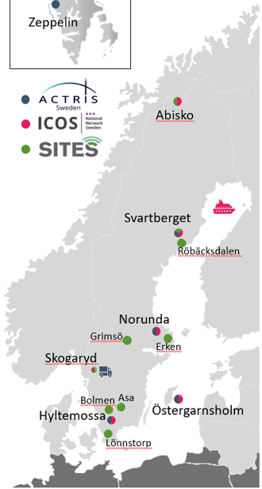
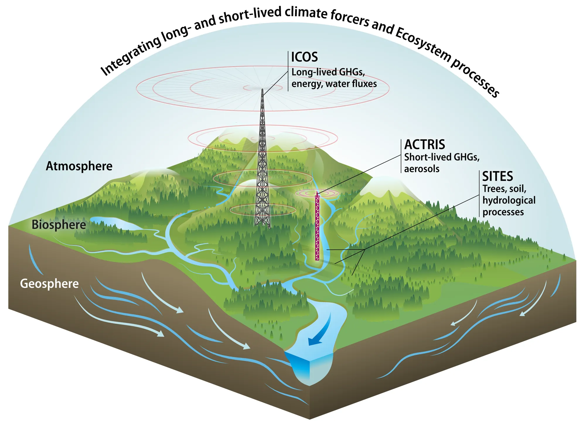

Land & inland waters
A national network of research stations providing long-term observations, experimental facilities and openly available data across terrestrial and aquatic ecosystems.
Visit SITES →From ecosystems and oceans to the atmosphere
SITES, ICOS Sweden and ACTRIS Sweden provide Sweden with long-term environmental observations, advanced measurement capabilities and research facilities spanning the land, inland waters, ocean and atmosphere.
Together, they create a national resource for understanding how different parts of the Earth system interact and respond to ongoing environmental and climate change.
Sites & observatories
Research stations and observatories extend from southern Sweden to the Arctic and into surrounding seas.
Explore where we work, what we measure and the research opportunities available at each location.
View all sites & observatories
Three infrastructures
The Earth's land, water, atmosphere, and ecosystems are closely linked. Changes in one part of the system can influence many others, while carbon is constantly exchanged between land, ocean, and atmosphere.
Together, the three infrastructures provide complementary observations that help us understand how these interconnected systems are changing.
Land & inland waters
A national network of research stations providing long-term observations, experimental facilities and openly available data across terrestrial and aquatic ecosystems.
Visit SITES →Greenhouse gases and carbon exchange
A national network of research stations with long-term, standardised observations of greenhouse gases and carbon cycling across the atmosphere, terrestrial ecosystems and ocean, connecting Swedish measurements to the European ICOS research infrastructure.
Visit ICOS Sweden →Aerosols and reactive trace gases
Advanced observations of aerosols, clouds and reactive trace gases, providing research capabilities for understanding atmospheric composition, air quality, weather and climate, connecting Swedish measurements to the European ACTRIS research infrastructure.
Visit ACTRIS Sweden →Working together
At locations across Sweden, measurements from the infrastructures overlap and complement one another based on the principles of creating long term observations, access to research stations, open data and international harmonisation of measurements.

Environmental records designed to reveal change over years and decades.
Access to field stations, observatories, experimental platforms and advanced instrumentation.
Quality-assured environmental observations available for research and wider use.
Swedish observations embedded within major European research infrastructures and international observing networks.